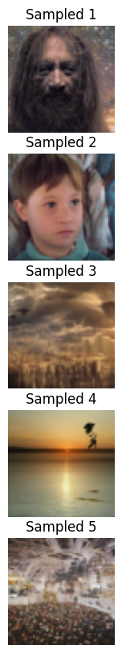
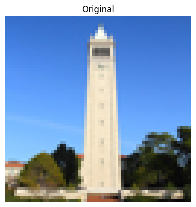

These images were generated with DeepFloyd with the following prompts at varying num_inference_steps values. For the rest of this project I am using random seed 180.
In order to use DeepFloyd as a denoiser, we first need a method by which we add noise to an image. For that we write a forward function which takes in an image and a timestep of noise. This process is done randomly, so the noise generated on each run can vary. Below are the results of an image of the Campanile passed into the forward function at varying timesteps.

First, we try denoising with Gaussian blur filtering, using torchvision. Below are the results for timesteps t = 250, 500, 750.
The results from 1.2 are clearly very poor, so we experiment with a UNet trained to predict noise, which we then subtract from the noised imaged to predict the original, yielding a significant improvement.
In the previous example, we computed the final denoised image in one pass of the unet. However, for large noise values, this becomes an increasingly difficult task, so instead, we can denoise over multiple iterations, using the previously calculated image as the input for the next call to the unet. We do this every 30 timesteps instead of each timestep to save compute, and the results are as follows.
As we can see, although the image is still blurry, there is very little noise in the image relative to the other methods. Here we see the process of iterative denoising at different selected timestep values on the way to the final result.
Instead of starting with an image of the Campanile, we can theoretically create random sample images by denoising a tensor of random noise. Below are 5 examples of sample images.
We can further increase the quality of the images with Classifier-Free Guidance, which we implement by also considering an unconditional sample from the UNet with an empty prompt. This procedure also include a hyperparameter gamma that affects the usage of the level at which the conditional noise estimate is used, the usage of which when gamma > 1 is nonintuitive since we the resulting coefficient on the unconditional estimate is negative. The following results are with gamma=7.
Further we can experiment with image-to-image translation, in this section by adding noise to an image and then denoising it to a certain degree, which by adding less noise than previous results in more creative outputs. We see this with lower i_start values as seen below for photos of the Campanile, Chernobyl, and a scene from Harry Potter.

Chernobyl
Harry Potter + Owl
We get even better results with non-realistic images, including the drawing found on the internet of Tamil film star Thalapathy Vijay. With i_start < 7 we see a woman, but when adding more noise it starts creating images of men in suits with a tie.
Here we have the results of this procedure with my attempt at drawing a flower in a vase.
And finally with a bonfire, which at i_start=20 actually returns a more realistic bonfire than the one I drew myself.

Another technique we can experiment with is inpainting, in which instead of noising and iteratively denoising the entire image, we compute the procedure for just a specific section of the image using a mask, leaving the rest untouched.
Replacing the tip section of the Campanile yields an odd bell-shaped cap to the tower.
Instead of the owl Harry Potter was holding before, he is now holding some owl-human hybrid creature too odd even for Fantastic Beasts.
Finally we defile Grant Wood's iconic American Gothic with a face sure to win the Rodrick Heffley lookalike contest.
In this section we guide the algorithm from 1.7.1 with a text prompt.
First we used the prompt "a rocket ship" with the Campanile.
Here we have the good ending of Chernobyl where the plant failure was stopped and it became a "snowy mountain village".
And finally we see what American Gothic might have looked like if gay marraige was legal in the 1930s. Prompt - "an oil painting of an old man"
Edit: After a Google search I learned the woman in American Gothic is actually not the man's wife, but his daughter.
We can also similar techniques to create a visual anagram optical illusion, where when viewing the image upright we see one picture but when the picture is flipped we see an entirely different picture. To do this, we modify our calculation of the noise estimate by averaging it with the flipped output of the unet on a flipped version of the image embedded with a second prompt.
This first image we see an old man upright, but upside down we can see people around a campfire.
The upright image is a snowy village and flipped we have a dog.
A rocket ship is visible when the image is upright and a pencil when the image is flipped. This pencil in particular was made for those with abnormally small palms, compensating with a massive pencil body for added grip.
Furthermore we can create hybrid images using high-pass and low-pass filters, where one image is apparent when looking close up and one is more visible from a distance. Here is a hybrid of a skull and a waterfall, and the skull is much more clearly visible from a distance (in the smaller picture) while the waterfalls become clear in the larger version.
Here we have a hybrid with prompts "an oil painting of people around a campfire" and "an oil painting of a snowy mountain village". I found this result the least satisfying of the three, as the campers in the smaller image seem to be around no campfire, and I found it slightly difficult to unsee the village houses as campers. However there is clearly a distinction between viewing the image from a distance and up close, and both images are more visible in their respective formats.
Finally we have a hybrid of a pencil and a rocket ship, using the same prompts as in the previous section. This was my favorite result as the rocket ship is immediately apparent in the smaller image while the pencil is very clear in the larger one. The rainbow coloring was a little odd, but I did not feel it affected their interpretation of the hybrid image.
Here we train our own diffusion model on MNIST to generate semi-realistic handwritten digits from 0 to 9. We build on our architecture step by step, first building and training a single-step UNet-based denoiser, then later modifying the architecture to condition on both time and class.
In order to train a basic denoiser, we first create basic blocks of layers based on a provided architecture. This is largely trivialized by the nn module within PyTorch.
The training process boils down to selecting images from the training set, adding random noise to it governed by a hyperparameter sigma, and then optimizing the L2 loss on the original image and the output of the net on the noised image. Below is a visualization of the noising process for various choices of sigma.
We trained the net with sigma=0.5 as well as batch size 256 and hidden size D=128, and used Adam optimizer with learning rate 1e-4 for 5 epochs, yielding the following loss curve plotted on a log scale.
After 1 epoch of training, the denoiser was already able to make sense of the digits as we can see below, but there is clearly still noise to be removed with further training.
After 5 epochs, the net has noticeably less noise.
We can also see if the model is able to generalize its performance to different choices of sigma besides 0.5, and we see the results below. As expected, lower values for sigma (i.e. less noise) yield a better result from the denoiser, while for values much above 0.5 the denoiser performs poorly, with lots of extraneous noise in the result.
We can modify this architecture in a few ways for improvement. First, instead of predicting the output image, we can predict the noise and optimize on the L2 loss over the generated noise and the predicted noise. Further, to sample a better image, we can denoise iteratively over 300 timesteps. Both of these techniques were done before in Part A, but are much differently implemented with a neural net.
To accomplish this, we first modify the underlying architecture by adding two "FCBlock"s, which is just a simple two layer fully-connected network that allows us to condition on a timestep input. For training and sampling, we follow the algorithms presented in the DDPM paper.
We train with a reduced batch size of 128 and hidden dimensions D=64. We still use Adam but with lr=1e-3 and implement a learning rate decay over 20 epochs of training, yielding the following loss curve.
Sampling from this net is slightly more involved given our iterative approach, but Algorithm 2 in the DDPM paper clearly outlines the procedure which we follow exactly. Below are some results from sampling from this net after 5 epochs.
The results are rather nonsensical besides the 1 in center top left and the 0 in the top right. After 20 epochs we see improvement, as shown below.
There is still much to be desired from the model, though, which motivates further conditioning of the model on classes, in this case just the digits from 0-9 to improve sampling.
To condition on class, we need to add two more FCBlocks to the model with class information. Although the class in this case is already a numerical value the actual digit has no purpose than just a categorical symbol so we encode it as a one-hot vector immediately after being passed into our network. Drawing from part A again, we implement CFG here by creating a mask for guidance from the classifier which is present in 90% of calls to the network (given the 10% dropout).
The training and sampling otherwise is nearly identical to before, and yields the following loss curve.
Results after 5 epochs. Already much better than the UNet only conditioned on time, but some of the digits are overly thick, primarily affecting 0 and 6.
Results after 20 epochs. The problem with 0s is not as bad, but digits have become thicker over training with a few samples (bottom 8, second 0) being complete bricks. Regardless, many of the digits are highly realistic and could pass off as actual MNIST data samples.